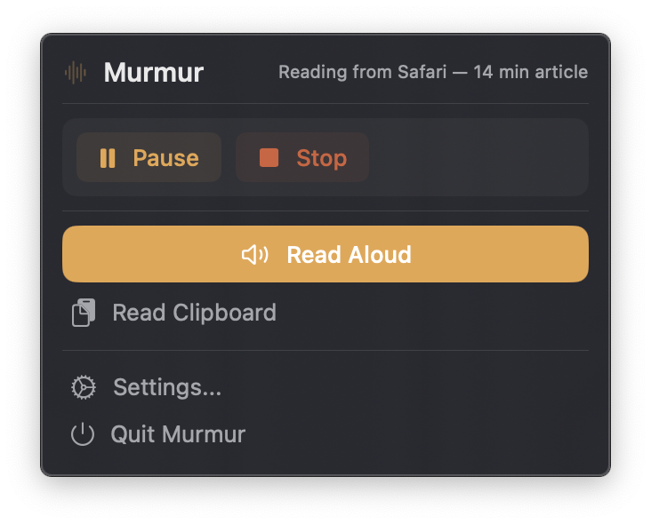
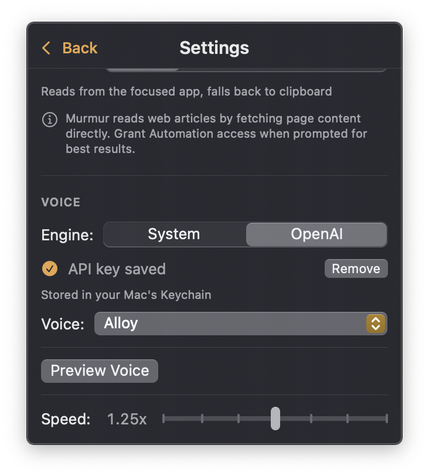

A macOS menu bar app that reads text aloud from any application. Focus a window, press ⌘⇧L, and listen.


Murmur lives in your menu bar and turns any on-screen text into speech — instantly.
Press ⌘⇧L from anywhere to start reading. Fully customizable in settings.
Reads the focused text in any app via the Accessibility API — with clipboard as a fallback.
Extracts article content directly from Safari and Chrome, skipping ads and navigation.
System voices for instant, free playback — or OpenAI TTS for studio-quality speech.
No dock icon, no windows — just a discreet menu bar panel. Stays out of your way.
System voice means zero network calls. OpenAI is opt-in — your text stays on your machine by default.
Murmur intelligently reads from the focused app — or falls back to your clipboard. Either way, it's one action.
Use the built-in system voice for free, offline speech — or bring your own OpenAI API key for studio-quality TTS.
Apple's built-in AVSpeechSynthesizer
High-quality cloud voices via the OpenAI API
Download the app or build from source. No external runtime dependencies.
Clone the repo and build with Xcode. Requires Xcode 26+ and xcodegen.
Murmur is a lightweight native app with minimal requirements.
macOS 15 Sequoia or later
Less than 10 MB
Accessibility (recommended)
Xcode 26+ & xcodegen
Murmur is free, open source, and built for people who'd rather listen.